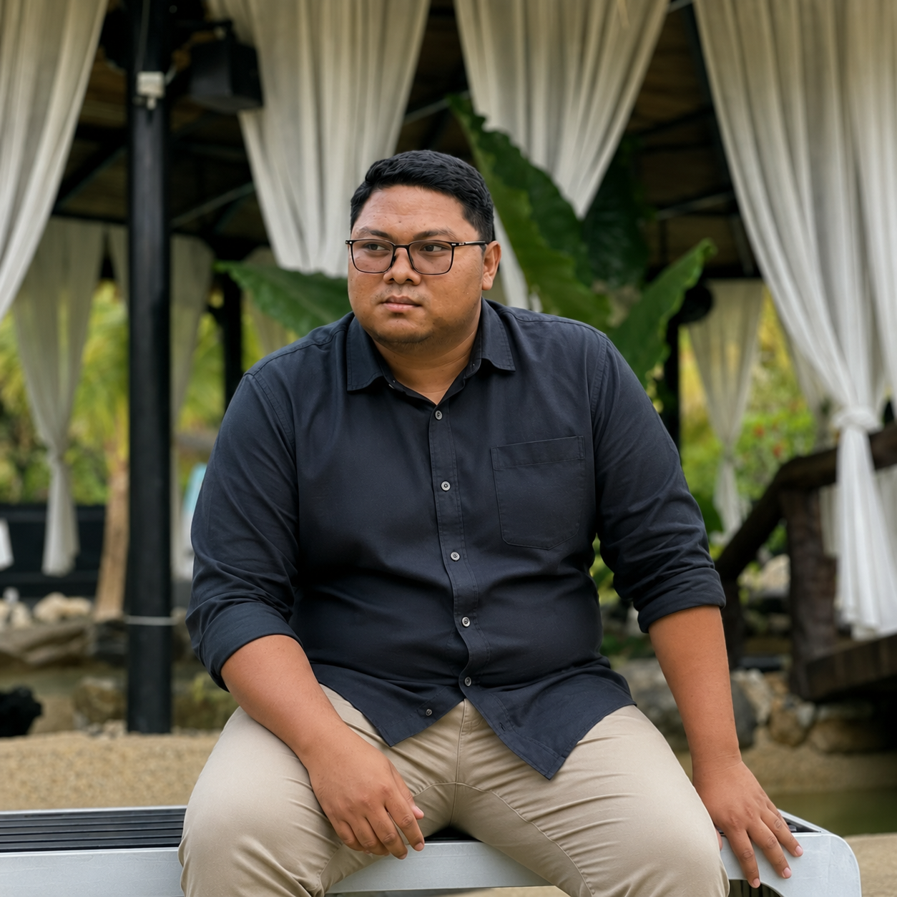

Veterinary Assistant (Field Supervisor) at Taman Agrovet Perlis

This personal website presents a detailed overview of Muhammad Amirul Aiman bin Mohamad Zaini, a dedicated veterinary assistant who contributes to animal welfare and agro-tourism development in Perlis.
He works at Taman Agrovet Perlis and is responsible for monitoring animal health and supporting farm operations.
He works as a Veterinary Assistant responsible for monitoring and maintaining animal health.
Taman Agrovet Perlis is a government agro-tourism site combining agriculture and veterinary services.
He has two years of experience in handling livestock and farm management.
His field focuses on veterinary services, animal health, and disease prevention.